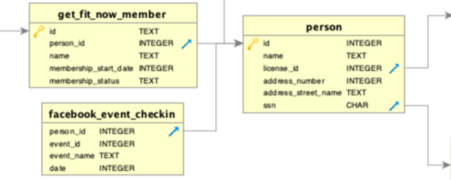
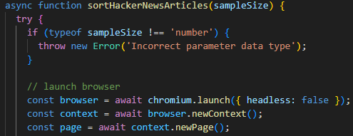
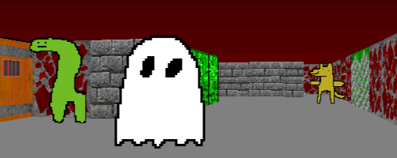

Blog
Recent projects
Filters
Today
10/10/2024

10:20:35 PM
Beautiful day, isn't it?
What will you choose to do with it?
SQL murder mystery
10/23/2024
After completing the problem set 9 from CS50 (Fiftyville), I liked the problem so much that I also completed the activity offered by Knight Lab. This also involves quering a database to find the perpetrator of a crime.
I really like how clever the idea of making a game using SQL is. It makes it not just a learning tool but also a fun experience.
This webpage
10/13/2024
My most recent project is this webpage, I already had experience building my own website but this one looks better and it took me less time, so that is an improvement. The other site I made was my previous portfolio website, which I hosted in github pages. I'm happy that I was able to build this website without having to follow a tutorial, yay!
A few websearches and looking at other websites was enough. Let this be proof of my progress.
Python coin counter
9/26/2024

Using shape detection in the OpenCV library in python, detect coins based on their size and count the number of coins present. In the future I might train an AI to detect coins without relying in the inaccuracies of camera angles and distances.
Downloading a pretrained data set is also an option to increase the effectiveness of the program, but making one myself would be a good way to learn more about the topic.
Article date check
9/15/2024
I made this project as a part of a technical test for a job application. The program consists in checking if the first 100 aticles of Hacker News were in sorted order using a library for web automation called Playwright by Microsoft within Java script.
The task was simple so i decided to add functionality such as choosing the amount of articles to be read and showing which ones are not in sorted order. Out of respect for the company I will not be sharing the code.
Database GUI
9/4/2024

This project is a comprehensive application that integrates database operations within a basic graphical user interface (GUI). It allows users to interact with the database, performing various operations such as data retrieval, insertion, updating, and deletion.
It also includes UI design that caters to users such as warning the user what elements are they deleting and text that shows the status of a sql query.
Retro Game
8/13/2024
A game made with an optical illusion, from 2D to 3D Ã la Wolfenstein 3D from last century. Using C++ and the power of math to cast rays in a 2D plane and obtain data to create a "fake" 3D game. The game was created along with SDL2 to process the inputs and openGL to handle the creation of a window, but the graphics themselves were made in a similar fashion to some of the first fps games that were created.
The "game" is just a tech demo, it does not contain any significant gameplay.
Infix to postfix calculator
12/10/2023

Calculator that uses the postfix notation to process data. Postfix notation is a more efficient way to handle large quantities of opererations. The calculator converts the infix notation (Human notation) into a more machine friendly notation with the use of a doubly linked list.
Preprocessing the information and storing it in memory adds a little overhead but it makes up in efficiency when handling intensive tasks. Specially when processing massive amounts of data.